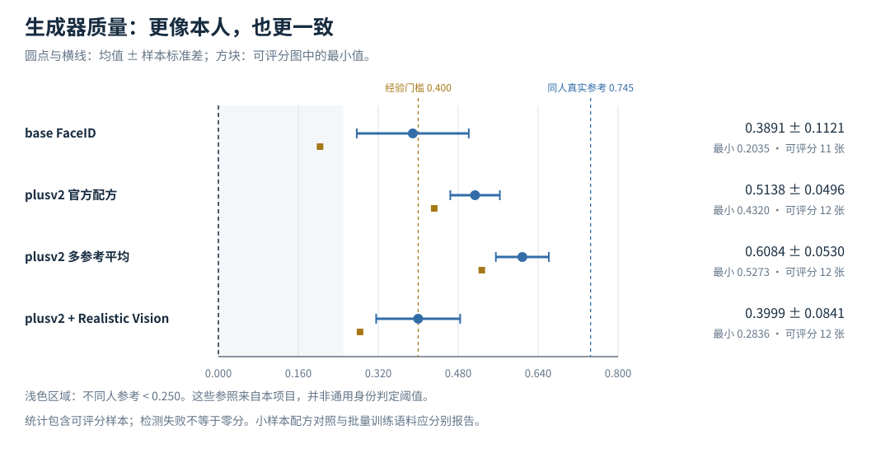
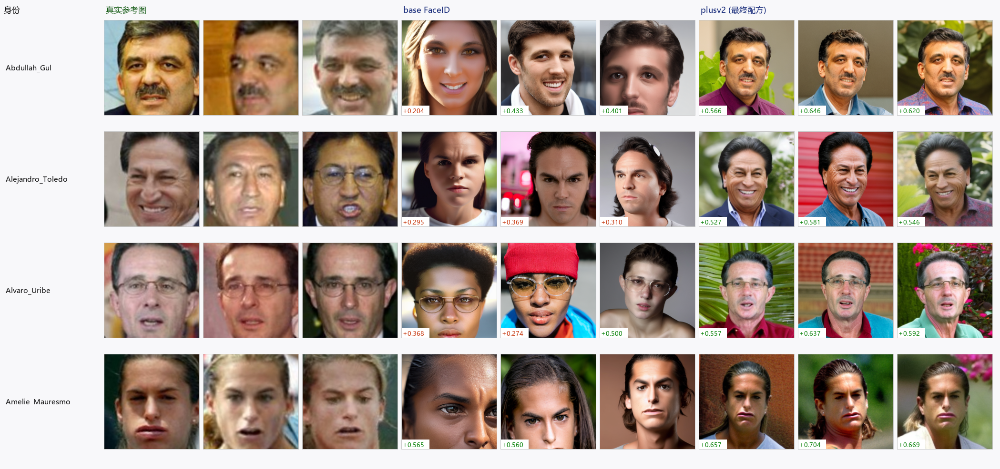
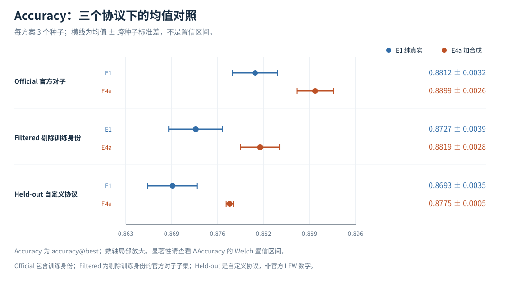
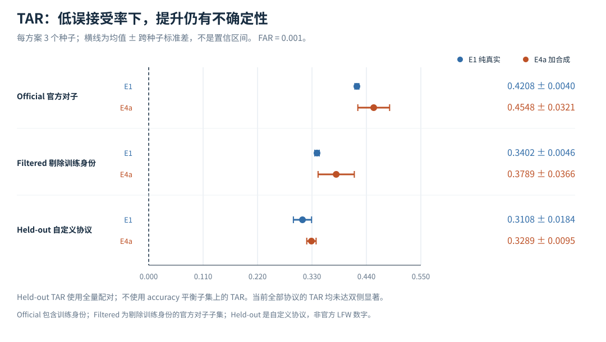
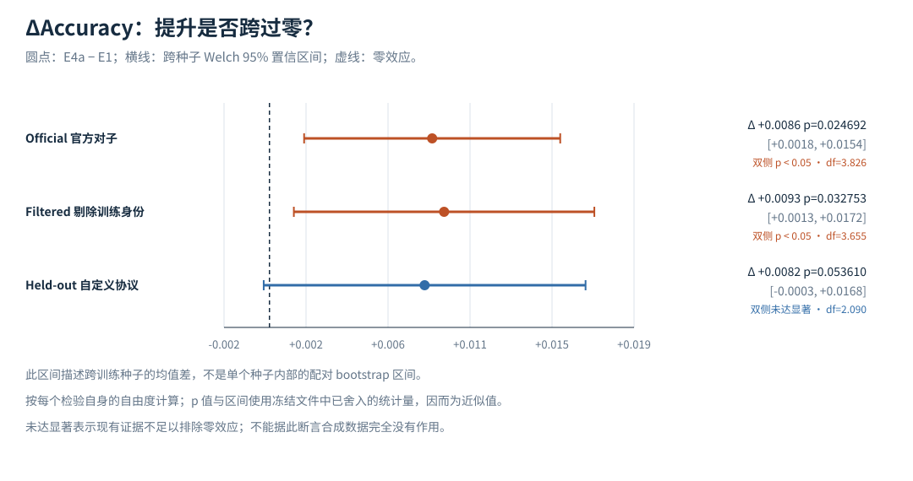
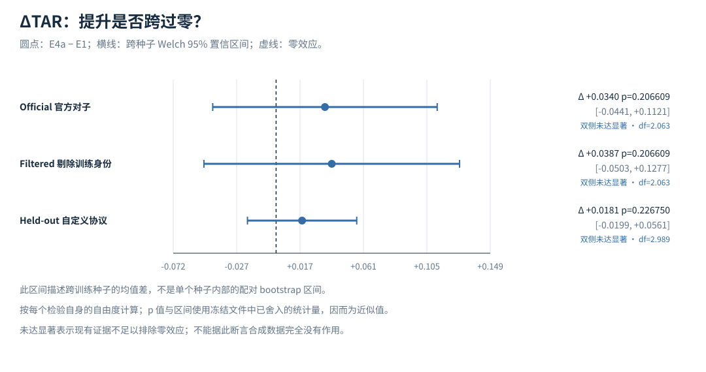

真实照片 → 检测与对齐
选择已有身份的真实照片，按识别模型的输入方式对齐；E1 使用真实数据作为基线。
训练模型：iresnet18；损失：arcface (self-trained)。
身份保持生成 · 数据扩充 · 人脸验证
为已有身份生成新的人脸照片，筛选后加入训练集，与只使用真实照片的模型对照。我们关心的不只是照片“像不像”，还有识别增益能否经得起不同协议和训练种子的检验。
读到最后，只需记住：accuracy 的跨种子均值上升；各协议的 TAR 均未达双侧显著，不能宣称低误接受率下性能已经稳定改善。Held-out 是自定义无身份泄漏协议，不是官方 LFW 数字。
直接查看证据 ↓身份保持不是终点；只有加入训练后的可复核增益，才能回答数据扩充是否有价值。
选择已有身份的真实照片，按识别模型的输入方式对齐；E1 使用真实数据作为基线。
训练模型：iresnet18；损失：arcface (self-trained)。
对同一身份的多张参考照片提取、平均并归一化身份嵌入；结合 CLIP 结构分支生成该身份的新照片。
采用 IP-Adapter-FaceID-plusv2 (ip-adapter-faceid-plusv2_sd15.bin)；底模 sd15 (original)；30 步，guidance=7.5。
筛去身份相似度不足或无法评分的图，再减少同身份内冗余。单纯保留最相似的图，可能损失为多样性引入的结构变化。
E4a 最终加入 755 张合成图。配方小样本的相似度不能当作全部训练合成图的均值。
同一骨干对照纯真实数据与真实＋合成数据。分别报告 Accuracy@best 和 FAR=0.001 下的 TAR。
每个方案重复 3 个种子；展示均值、种子间波动，以及均值差的置信区间。
id_sim 是与本人真实参考中心的余弦相似度，是本实验中的身份保持代理指标。
采用方案：plusv2 + 多参考平均嵌入（最终采用）。可评分 12 张，均值 0.6084，最小值 0.5273。

| 方案 | 可评分／生成 | id_sim 均值 | 最小值 |
|---|---|---|---|
| IP-Adapter-FaceID (base, ID 一路) | 11/12 | 0.3891 | 0.2035 |
| IP-Adapter-FaceID-plusv2 (ID + CLIP 两路, shortcut=True) | 12/12 | 0.5138 | 0.4320 |
| plusv2 + 多参考平均嵌入（最终采用） | 12（未记录生成总数） | 0.6084 | 0.5273 |
| plusv2 + Realistic Vision V6 底模 | 12/12 | 0.3999 | 0.2836 |
参照：同人真实照片 0.745；不同人参考低于 0.250。这些是本项目参照，不是普遍适用的身份识别阈值。检测失败样本不记作零分，也不应从失败率讨论中消失。
先看身份是否保持，再读分数。外观更逼真不自动意味着识别训练更有用。

每个格子为跨种子均值 ± 样本标准差；显著性使用双侧 Welch 检验，p 值由冻结统计量推导。
使用官方配对清单，但包含训练身份；这里的 accuracy@best 在测试分数上选最佳阈值，不是可直接对照文献的官方交叉验证 LFW 成绩。
| 指标 | E1 · 纯真实 | E4a · 真实＋合成 | 均值差 E4a−E1 | Welch 检验 |
|---|---|---|---|---|
| Accuracy@best | 0.8812 ± 0.0032 | 0.8899 ± 0.0026 | +0.0086p≈0.024692 | 双侧显著 |
| TAR@FAR=0.001 | 0.4208 ± 0.0040 | 0.4548 ± 0.0321 | +0.0340p≈0.206609 | 未达双侧显著 |
从官方配对清单剔除含训练身份的对子；是过滤子集，不是独立采集的新测试集。
| 指标 | E1 · 纯真实 | E4a · 真实＋合成 | 均值差 E4a−E1 | Welch 检验 |
|---|---|---|---|---|
| Accuracy@best | 0.8727 ± 0.0039 | 0.8819 ± 0.0028 | +0.0093p≈0.032753 | 双侧显著 |
| TAR@FAR=0.001 | 0.3402 ± 0.0046 | 0.3789 ± 0.0366 | +0.0387p≈0.206609 | 未达双侧显著 |
使用与训练身份无交集的自定义配对协议；不是官方 LFW 数字。Accuracy 使用平衡子集，TAR 使用全量配对。
| 指标 | E1 · 纯真实 | E4a · 真实＋合成 | 均值差 E4a−E1 | Welch 检验 |
|---|---|---|---|---|
| Accuracy@best | 0.8693 ± 0.0035 | 0.8775 ± 0.0005 | +0.0082p≈0.053610 | 未达双侧显著 |
| TAR@FAR=0.001 | 0.3108 ± 0.0184 | 0.3289 ± 0.0095 | +0.0181p≈0.226750 | 未达双侧显著 |
Held-out accuracy：t=3.9819、df=2.090、双侧 p≈0.053610，未达双侧显著。本页按各检验自身的自由度判断，不沿用报告初稿的统一临界值；原始实验结果文件保持不变。各协议的 TAR 均未达双侧显著，不能宣称低误接受率下性能已经稳定改善。




参考上限：零样本 buffalo_l 的 held-out accuracy=0.9993、TAR=0.9989。这是不同训练条件的预训练参考，不是合成数据带来的增益。
官方清单包含 10 个折，但本页 accuracy@best 使用全局最佳阈值。最佳阈值是在测试分数上选取，属于偏乐观的描述性指标，不能当作独立验证阈值后的部署结果。
训练身份交集为零，解决的是身份层面的泄漏。Held-out 仍来自同一数据源，并不是跨数据集、跨人口分布的泛化验证。SD 描述种子间波动；Welch 区间描述跨种子均值差，两者不能混称。
这些经验来自本项目排查记录；实现细节应结合当前源码与依赖版本核查。
tar_at_far(labels, scores, far) 的标签和分数不能交换。用边界测试防住静默返回无效结果，而不是只看程序是否报错。
错误检测配置会漏掉生成样本，使可评分子集发生偏移。评分口径改变时，要重新比较全部方案，并同时报告检测失败。
只按身份相似度排名保留样本，容易保留结构相近的照片。质量地板与冗余剪枝需要一起考虑。
官方配对清单含训练身份；accuracy 在测试集上选择最佳阈值。自定义 held-out 提供补充证据，却不等同于官方成绩或独立采集的测试集。
种子数量有限，TAR 增益仍不确定；当前还不能确定更多合成数据是否一定更好。这里只研究有限的训练身份、生成样本及一个识别骨干，也未覆盖完整合成占比扫描和跨数据集验证。
身份相似度代理指标不能代替对生成质量、偏差及下游性能的完整评估。预训练模型若同时参与身份条件、筛选或评测，应明确度量空间依赖。
浏览本页无需联网、构建或后端。数据和图表由仓库脚本生成，结果可追溯。
将三个脚本放入仓库的 tools 目录，在激活的项目环境中运行：
python tools/export_site_data.py python tools/build_site_charts.py python tools/build_site_page.py
随后双击 site/index.html。这是展示构建，不会重新训练或生成模型样本。
评测器边界测试和本机 CPU 复现属于后续任务。需准备项目配置、数据及预训练权重，再运行：
python scripts/evaluate.py --exp-id e0-buffalo_l-lfw --cpu
完整生成与训练流程见仓库 docs/REPORT.md 和 docs/W3-GENERATION.md；这些 GPU 实验由 A 已完成，本页展示冻结结果。
共核对 11 个来源文件；本页实验数字由脚本读取导出数据生成。
打开完整导出数据 JSON · 打开离线 JavaScript 数据文件
results/runs/w3-generator-comparison/comparison.jsonresults/runs/w4-e4-comparison/comparison.jsonresults/runs/e0-buffalo_l-heldout/metrics.jsonresults/runs/e0-buffalo_l-lfw/metrics.jsonresults/runs/e1-real-only-seed0/metrics.jsonresults/runs/e1-real-only-seed1/metrics.jsonresults/runs/e1-real-only-seed2/metrics.jsonresults/runs/e4-highquality-synth-seed0/metrics.jsonresults/runs/e4-real-plus-synth-seed0/metrics.jsonresults/runs/e4-real-plus-synth-seed1/metrics.jsonresults/runs/e4-real-plus-synth-seed2/metrics.json均值、标准差、点估计和检验统计量来自结果文件。页面中的比例、p 值和置信区间按记录字段计算；p 和区间使用舍入后的冻结统计量，属于近似值。